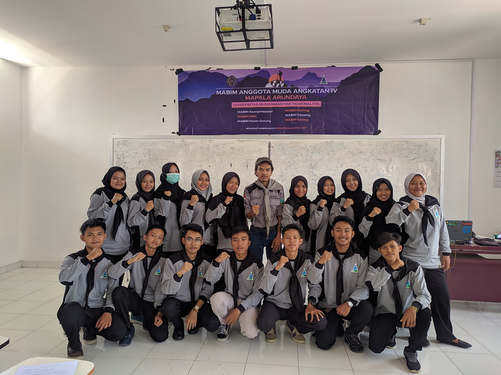
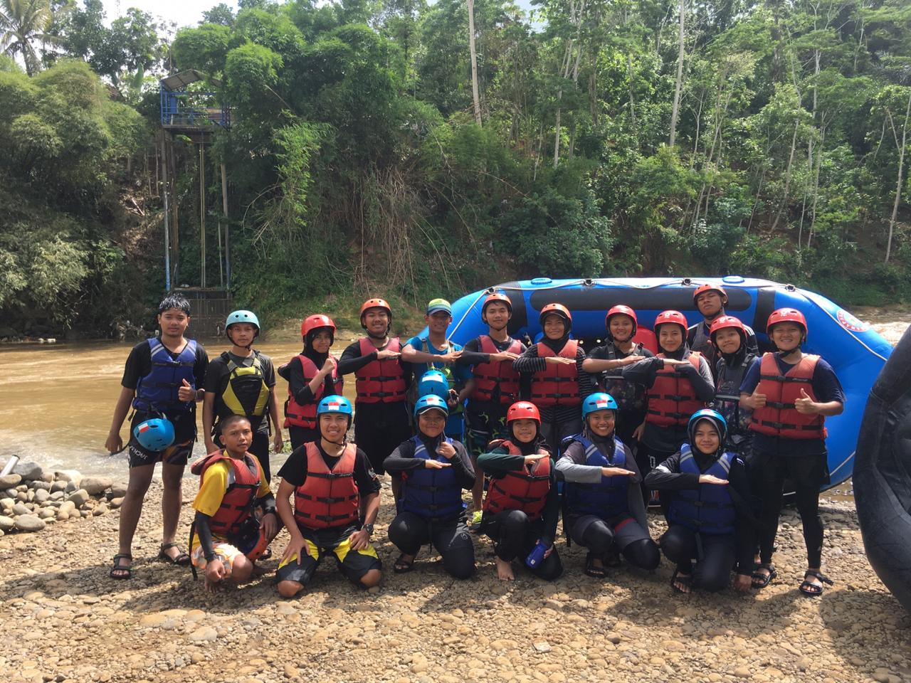
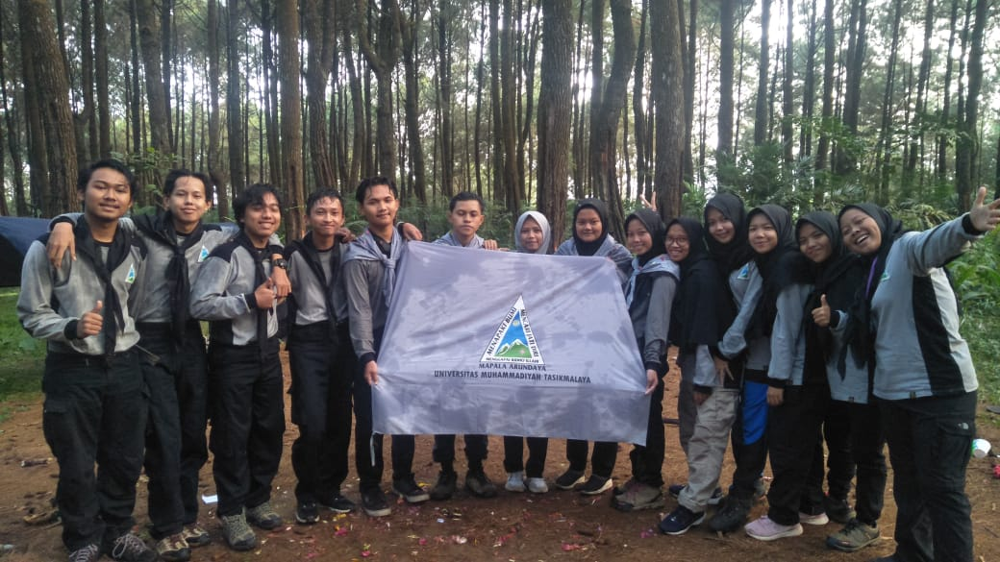

Mahasiswa Pencinta Alam atau Mapala Arundaya adalah salah satu organisasi di Universitas Muhammadiyah Tasikmalaya yang berkecimpung dalam dunia kepencintaalaman, berkegiatan alam bebas dan sosial. Kata ARUNDAYA sendiri merupakan Bahasa sansakerta yang berarti “matahari terbit”. Mapala Arundaya didirikan oleh 5 orang Pendiri pada tanggal 23 Maret 2016 dan dideklarasikan di Gunung Galunggung pada tanggal 25 Maret 2016 dengan 5 orang pendiri dan 5 orang perintis. Motto Mapala Arundaya adalah "Menapaki Bumi, Mencari Jati Diri, Menggapai Ridho Illahi".
Menjadikan ARUNDAYA sebagai organisasi yang menjunjung tinggi ketuhanan, tanpa membeda-bedakan golongan.
Camping Ceria bersama Pengurus dan Calon Anggota Mapala Arundaya untuk meningkatkan kepedulian terhadap alam.
Pendidikan dan latihan dasar dalam bidang alam bebas.
Masa bimbingan untuk anggota muda Mapala Arundaya.
Peringatan dan Perayaan hari jadi Mapala Arundaya
Kegiatan pendakian ke gunung untuk memperkuat kebersamaan dan keterampilan survival.
Kegiatan pelatihan divisi di kampus external untuk meningkatkan kemampuan anggota.
Kegiatan pelatihan medis dan pertolongan pertama di alam bebas untuk Siswa SMA/SMK/Sederajat, Mahasiswa, dan Masyarakat Umum, Organisasi Kepemudaan, Relawan Sosial, dan Masyarakat Umum.
Kegiatan sosial dan santunan untuk membantu masyarakat yang membutuhkan.



Email : mapala.arundaya@umtas.ac.id
Instagram : @mapala.arundaya
Alamat : Universitas Muhammadiyah Tasikmalaya